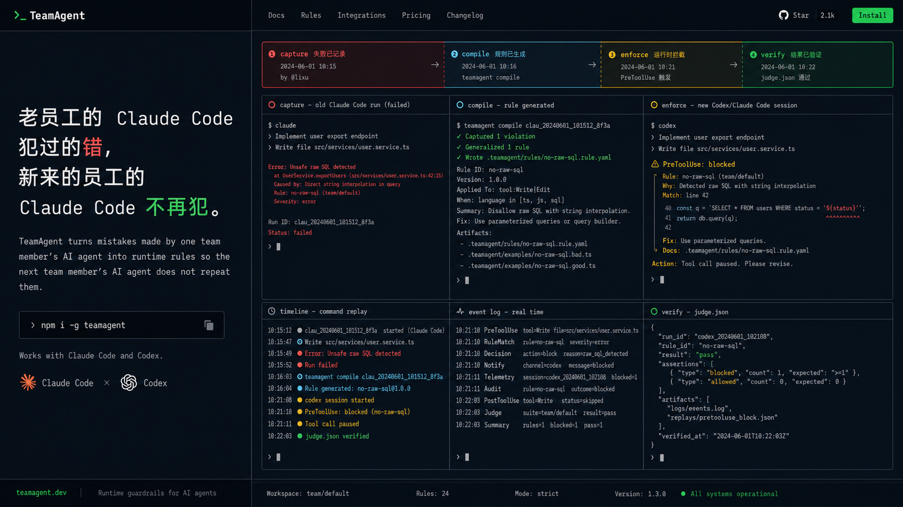
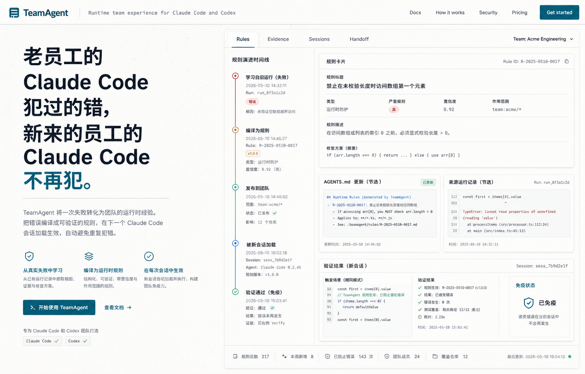

A · Recommended
Evidence Console
浅色工程工作台 + 深色证据控制台。最适合把“错误 → 规则 → 拦截 → 验证”讲清楚。
- 最强差异化：不像普通 AI memory，也不像企业合规软件。
- 适合官网首屏、产品视频主视觉、后续 dashboard。
- 风险：需要真实 UI 细节支撑，不能只停留在 mockup。
默认推荐证据感可审计

核心记忆点：老员工的 Claude Code 犯过的错，新来的员工的 Claude Code 不再犯。建议优先看 A，再决定是否混入 B/C 的元素。

